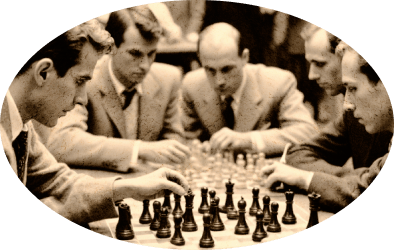

Превратите уездный город
в столицу земного шара
Оплатите взнос на телеграммы для организации
Международного васюкинского турнира по шахматам
Оплатите взнос на телеграммы для организации Международного васюкинского турнира по шахматам
Ценная информация
Чтобы поддержать Международный васюкинский турнир
посетите лекцию на тему: «Плодотворная дебютная идея»
и Сеанс одновременной игры в шахматы на 160 досках гроссмейстера О. Бендера
Место проведения:
Клуб «Картонажник»
Дата и время мероприятия:
Стоимость входных билетов:
20 коп.
Плата за игру:
50 коп.
Взнос на телеграммы:
100 руб.21 руб. 16 коп.